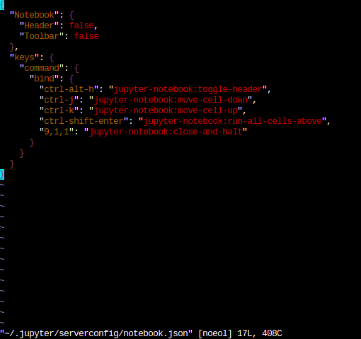

Saving Jupyter configuration on Paperspace.
Saving Jupyter configuration
Today, I will go over how to save Jupyter configurations on Paperspace so that we can keep using the customized shortcuts we saved.
As I used more Jupyter notebook, I learned shortcuts to save mouse clicks and time. Instead of clicking run to run a cell, I use Shift-Enter to run and move to the next cell or Ctrl-Enter to run and stay at the cell. I also use m to convert a cell to markdown and 0,0 to restart kernel. However, there are more commands I assigned keyboard shortcuts for.
On Jupyter notebook, some of my customized shortcuts are these:
run all cells above:Ctrl-Shift-Entermove selected cells up:Ctrl-Kmove selected cells down:Ctrl-Jshutdown kernel and close window:9,1,1switch between showing and hiding the header:Alt-Ctrl-H
One day, I got on Paperspace and opened classic Jupyter notebook. As Paperspace’s notebook looked the same as my local computer’s, I tried to use my shortcut thinking it was my local computer, but nothing happened. Then I thought, ‘oh yeah, I’m on paperspace. I cannot use shortcuts.’ After a moment, I also thought ‘why not?’ I started to look for a file in my home directory in Paperspace to find out where it’s keeping track of all the configuration stuff, and put it in my persistent storage. If you wanted to save Jupyter configuration, but couldn’t do it yet, here’s how.
Taking actions
This is on Paperspace’s instance using fastai image.
cd: go to home directory.ls -al: List (show) hidden directories and files. You can see that we have.jupyter/. This is where jupyter things are located.

ls -al output- Open Jupyter notebook and save shortcuts. Personally, I opened classic notebook and saved mine, but jupyterlab settings should work, too. You can also save other settings on jupyterlab as well, such as terminal color, etc. These will be persistent as well.
vim ~/.jupyter/serverconfig/notebook.json: No need to edit anything. We can just see that this is where all configurations are saved. This is how mine looks like:

My jupyterlab configurationsmv ~/.jupyter /storage/: Move.jupyter/directory into our persistent storage space.ln -s /storage/.jupyter: Create a symlink from our persistent storage’s jupyter to home directory.vim /storage/pre-run.sh: To make these settings last next time the instance starts, we have to add some lines topre-run.sh. Add following lines into the file if there’s nothing in it:
#!/usr/bin/env bash
pushd ~
cd
rm -rf .jupyter/
ln -s /storage/.jupyter/
popdThat’s it. You can restart your instance to check.
Conclusion
We saved jupyter configurations on Paperspace today. We used some bash If you are not familiar with bash, scripts, and others covered here, check out live coding vidoes by Jeremy Howard. I have written blogs based on these videos, so you can read them as well.